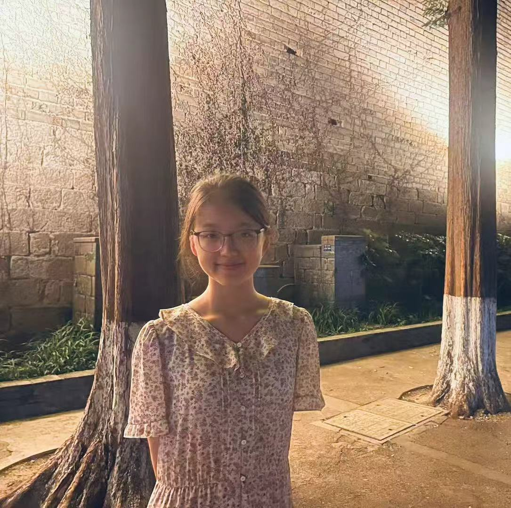

Undergraduate Student · School of Statistics
Renmin University of China, Beijing, China
I am a third-year undergraduate in the Department of Statistics at at Renmin University of China (RUC), majoring in Data Science and Big Data Technology. My academic record places me in the top 5% of my cohort, with a GPA of 3.9/4.0.
My current research interests lie at the intersection of Online Learning and Game Theory.
I am currently a research intern at School of Artificial Intelligence, Nanjing University, supervised by Associate Professor Peng Zhao. Previously, I worked at LUMOS AI Lab at Gaoling School of Artificial Intelligence, Renmin University of China (RUC), under the supervision of Associate Professor Prof. Xiao Zhou.
Proposed a novel disentanglement network that separates weather-induced effects from intrinsic urban flow patterns using causal augmentation. The model significantly improves generalization under adverse weather conditions. In: Proceedings of the 35th ACM Web Conference (WWW 2026), Dubai, United Arab Emirates, 2026, arXiv:.
Investigated latent-space steering techniques for fine-grained control of affective attributes in generated text without task-specific fine-tuning. In: Proceedings of the 2026 Conference on Empirical Methods in Natural Language Processing (EMNLP 2026), Budapest, Hungary, 2026.